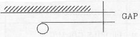
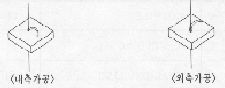

Wire-Cutting M/C
|
구조 및 개요 |
제어되는 X-Y Table상에 고정된 가공물을 임의의 윤곽형상으로 방전에 의해 고정도로 가공하는 기계 : 즉, CNC Table wire 전극 방전 가공기. |
|||||||||||||||
|
용 도 |
가공물이 전도성의 것이면 그 재질 정도에 관계없이 고정도의 가공이 가능한 기계이며 더욱이 가공물의 형상이 복잡한 것 (단, 관통일 것) 등에 그 위력을 발휘하는 설비 |
|||||||||||||||
|
용어설명 |
Wire |
참고) 재질은 동선 |
||||||||||||||
|
GAP |
개요 : wire가 피가공물간에 방전효과를 일으킬 수 있는 간격  ex) GAP SIZE : 0.04㎜ (wire size 가 ø0.2일 경우) |
|||||||||||||||
|
Start |
개요: 내부가공일 경우 wirerk 꿰어질 수 있는 시공 HOLE
 |
|||||||||||||||
|
가공 가능 SIZE |
① 최대 가공 가능 두께 : 60㎜ ② 외측가공 : 도체이고, 관통가공이면 어떤 형태, 어쩐 SIZE도 어떤 형태, 어떤 SIZE도 가공 가능 |
|||||||||||||||
|
피 가 공 물 |
① 반드시 도체이어야 함. ② 재질별 가공성은 비슷하나, Al이 가장 우수하다. ③ 열처리 상태가 가공성이 좀 더 우수하다. |
|||||||||||||||
|
가공가능조도 |
▽▽ ~ ▽▽▽ |
|||||||||||||||